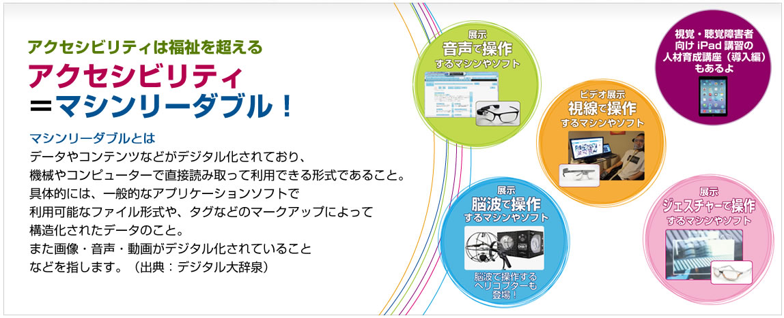

10時30分から17時30分
情報のバリアフリー。利用する全ての人が、心身の機能や利用する環境に関係なく、提供されている情報やサービスを利用できること

「アクセシビリティの祭典」は、自治体・企業・制作会社・障害者支援施設などに属する方々、障害を持つ当事者など様々な立場の人が、新しいアクセシビリティ（情報バリアフリー）技術に触れて体感していただける祭典です。 「アクセシビリティ＝高齢者や障害者への特別な配慮（福祉）」ではなく、「アクセシビリティ＝マシンリーダブル！」をテーマに、展示やセミナーを通じて、ソフトやデバイスが多様化する現在・未来のアクセシビリティをご覧いただけるようなコンテンツを準備する予定です。ぜひ会場に足をお運びください。
2015年1月15日
アクセシビリティの祭典ページを公開しました！
‣お知らせ一覧
メイン対談：未来のアクセシビリティを考える
近年IT技術目まぐるしい発展の中で新たにIoT、ウェアラブルデバイスなどのキーワードが登場し、関連する製品が発表されてきています。
次々に登場する新しいデバイスを活用することによって私たちの未来がどう変わるのか？
それらデバイスのアクセシビリティはどのように考えられているのか？
本セミナーではウェアラブルデバイス、アクセシビリティ各界のトップリーダーである塚本昌彦教授、植木真氏をお招きし、これらのテーマについて最新の業界動向を踏まえて語っていただきます。
神戸大学大学院工学研究科 教授
塚本 昌彦氏
神戸大学大学院工学研究科・教授。工学博士。
2001年より研究の一環としてHMDの装着生活を行っている。
NPOウェアラブルコンピュータ研究開発機構理事長。
日本ウェアラブルデバイスユーザー会会長。
株式会社インフォアクシア 代表取締役
植木 真 氏
WebサイトおよびWebアプリケーションのアクセシビリティ確保をコンサルティング。国内外のアクセシビリティ・ガイドライン策定にも従事。
現在はWAIC（ウェブアクセシビリティ基盤委員会）の委員長を務めている。
開催セミナーピックアップ
確定したセミナーを随時掲載いたします。
動画をアクセシブル＆マシンリーダブルにする方法
株式会社インフォアクシア 植木 真氏
YouTubeなどを使って動画を配信することは、ごく当たり前のことになってきました。その動画のコンテンツをマシンリーダブルにできる方法があるって、皆さんご存知でしたか？ それは、動画コンテンツにキャプションを提供することです。しかも、思っているよりも意外とカンタンにできてしまうのです。
このセミナーでは、動画にキャプションを提供するメリットは何か、キャプションはどのように作成すればよいのかをはじめ、HTML5やYouTubeなどを使ったキャプションの提供方法までをデモを交えて解説します。
動画をアクセシブル＆マシンリーダブルにする方法
株式会社インフォアクシア 植木 真氏
YouTubeなどを使って動画を配信することは、ごく当たり前のことになってきました。その動画のコンテンツをマシンリーダブルにできる方法があるって、皆さんご存知でしたか？ それは、動画コンテンツにキャプションを提供することです。しかも、思っているよりも意外とカンタンにできてしまうのです。
このセミナーでは、動画にキャプションを提供するメリットは何か、キャプションはどのように作成すればよいのかをはじめ、HTML5やYouTubeなどを使ったキャプションの提供方法までをデモを交えて解説します。